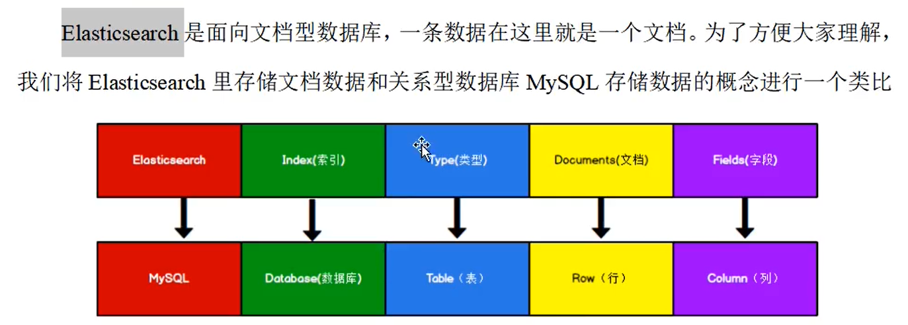

数据格式


倒排索引
关键字---》id
正排索引
id----》关键字
一、索引操作（HTTP）
1、创建索引
对比关系型数据库，创建索引就等同于创建数据库
在Postman中，向ES服务器发送PUT请求：http://127.0.0.1:9200/shopping
为什么要发送put请求？
Get：获取索引
Delete：删除索引
Put：创建索引
Http请求Get，Delete、Put方法具有幂等性，可以使用；而Post方法不具备幂等性，不支持使用；
（幂等性：方法执行一次还是执行多次，其产生的影响是一致的）
2、查看索引
2、1 获取指定索引信息
在Postman中，向ES服务器发送Get请求：
http://127.0.0.1:9200/指定索引名
2、2 获取所有索引信息
http://127.0.0.1:9200/_cat/indices?v
3、删除索引
在Postman中，向ES服务器发送Delete请求：
http://127.0.0.1:9200/指定索引名
二、文档操作（HTTP）
1、创建文档

为什么创建文档只能用Post请求？
1、因为创建文档完毕（发送请求）之后，ES服务器会返回一个关于该文档的详细信息，返回的信息每次不一致；不具备幂等性，只能使用Post请求。
2、创建固定id的文档
使用POST请求向：http://127.0.0.1:9200/shopping/_doc/指定的ID 发送JSON数据。
在不指定id时，ES每次会给该文档创建不同的id
在指定id之后，就可以使用PUT请求来进行创建文档了（具备了幂等性）。
3、查询文档（主键查询）
使用Get请求：
http://127.0.0.1:9200/shopping/_doc/文档id
4、全部查询（查询索引下的全部文档）
使用Get请求：
http://127.0.0.1:9200/shopping/_search
5、修改文档（完全覆盖）
使用Put请求：
http://127.0.0.1:9200/shopping/_doc/指定id发送修改的JSON数据
6、局部更新
使用PSOT请求
http://127.0.0.1:9200/shopping/_update/1文档id 发送JSON数据
{
"doc":{
"title":"华为"
}
}
7、删除文档
使用delete请求
特殊的查询操作：（HTTP）
1、条件查询（通过请求路径）
Get请求：
2、条件查询（通过请求体）
Get请求：
请求体：
{
"query":{
"match":{
"name":"value"
}
}
}
3、全部查询（使用请求体）
Get请求：
请求体：
{
"query":{
"match_all":{}
}
}
4、分页查询
Get请求：
请求体：
{
"query":{
"match_all":{}
},"from":0,
"size":2
}
（页码-1）*每页数据条数
5、查询文档中的特定信息
Get请求：
请求体：
{
"query":{
"match_all":{}
},"from":0,
"size":2,
"_source":["name1"]
}
6、查询排序
Get请求：
请求体：
{
"query":{
"match_all":{}
},"from":0,
"size":10,
"_source":["name"],
"sort":{
"num":{
"order":"desc"
}
}
}
//根据 num排序
7、多条件查询
Get请求：
请求体：
{
"query":{
"bool":{
"must":[
{"match":{
"name":"李康"
}},{
"match":{
"id":"005"
}
}
]
}
}
}
"must"表示条件同时成立（与），"should"表示（或）
8、范围查询
Get请求：
请求体：
{
"query":{
"bool":{
"must":[
{"match":{
"name":"李康"
}},{
"match":{
"id":"009"
}
}
],"filter":{
"range":{
"num":{
"gt":100
}
}
}
}
}
}
"gt"表示大于
ES在查询的时候，会进行分词操作，比如"小米"分为"小""米"，在根据倒排索引去查询。
9、全查询（不进行分词操作）
Get请求：
请求体：{
"query":{
"match_phrase":{
"name1":"value1"
}
}
}
10、高亮查询
Get请求：
请求体：{
"query":{
"match_phrase":{
"name1":"value1"
}
},"highlight":{
"fields":{
"name2":{}
}
}
}
11、聚合查询
Get请求：
请求体：{
"aggs":{ //聚合操作
"price_group":{ //统计结果名称，随意起名
"terms":{ //分组
"field":"price" //分组字段（字段需要是关键字类型）
}
}
},
"size":0 //表示不显示原始数据
}
12、对字段求平均值
Get请求：
请求体：{
"aggs":{ //聚合操作
"price_avg":{ //统计结果名称，随意起名
"avg":{ //平均值
"field":"price" //分组字段
}
}
},
"size":0 //表示不显示原始数据
}
映射关系：
在创建索引的时候，给请求体写入映射关系

"type"表示类型，其中值为"text"表示文本数据，可以被分词，
值为"keyword"表示关键字，不能被分词。
"index"表示是否被索引，值为"false"，表示不能被索引，不能被查询。
Java API操作
ES是通过java语言开发的，所以也可以通过java API的方式对ES服务进行访问。
创建Maven项目
增加依赖
<dependencies>
<dependency>
<groupId>org.elasticsearch</groupId>
<artifactId>elasticsearch</artifactId>
<version>7.14.0</version>
</dependency>
<!--ES客户端-->
<dependency>
<groupId>org.elasticsearch.client</groupId>
<artifactId>elasticsearch-rest-high-level-client</artifactId>
<version>7.14.0</version>
</dependency>
<dependency>
<groupId>junit</groupId>
<artifactId>junit</artifactId>
<version>4.8.2</version>
<scope>test</scope>
</dependency>
<!--log4j2-->
<dependency>
<groupId>org.apache.logging.log4j</groupId>
<artifactId>log4j-core</artifactId>
<version> 2.14.1</version>
</dependency>
<dependency>
<groupId>org.apache.logging.log4j</groupId>
<artifactId>log4j-api</artifactId>
<version>2.14.1</version>
</dependency>
</dependencies>
//创建ES客户端
RestHighLeveClient esClient=new RestHighLeveClient(RestClient.builder(new HttpHost("localhost",9200,"http")));
//关闭ES客户端
esClient.close();
创建索引
//创建ES客户端
RestHighLeveClient esClient=new RestHighLeveClient(RestClient.builder(new HttpHost("localhost",9200,"http")));
//创建索引
CreateIndexRequest request=new CreateIndexRequest("user");
CreateIndexResponse createIndexResponse=esClinent.indices().create(request,RequestOptions.DEFAULT);//RequestOptions.DEFAULT是默认的请求配置
//关闭ES客户端
esClient.close();
javaAPI操作：